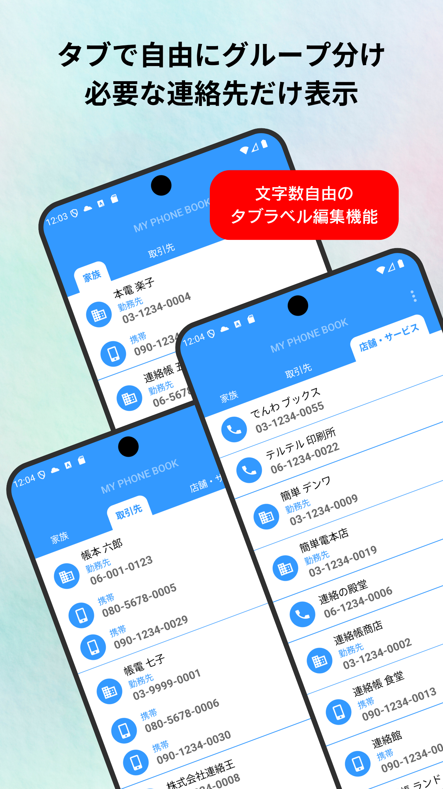

MY PHONE BOOK

とにかく見やすさを追求した電話帳アプリ
Google連絡先から電話番号がある連絡先を抽出して表示します。
電話番号は１連絡先につき２件まで表示します。
タブは初期設定で４つまで使用でき、自由にラベルを編集できます。
タブの移動は画面のスワイプとタブラベルのタップのどちらでも可能。
TELアイコンをタップすると規定の電話アプリに電話番号を渡すので、料金が割引される電話アプリなどと自動的に連携します。

必要な連絡先だけタブ分けして、他は非表示に
タブラベルを編集して、連絡先リストをグループ分けできます。
現在のタブから他のタブに連絡先を移動するには《電話リストから選択して他のタブに移動》を選択します。
必要な連絡先だけタブグループに移動して、使用しない連絡先は「Homeタブを非表示」で非表示にできます。


便利なオプション機能
オプションで《最大タブ数の変更》《TELアイコン位置》《テーマカラー》の各機能が使用できるようになります。
シンプルさと快適さを追求した電話帳アプリです！